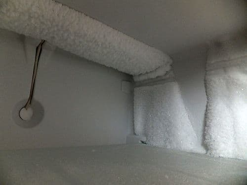
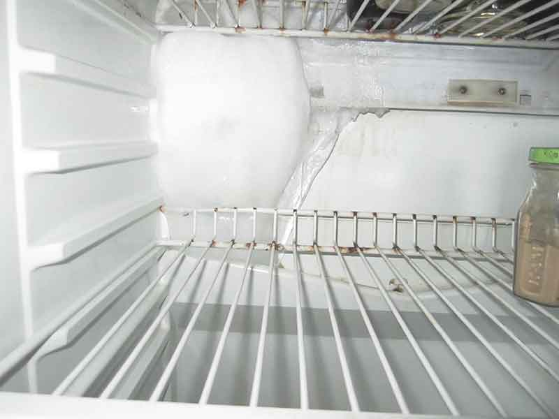

Почему на задней стенке холодильника намерзает лед
Авг
Почему на задней стенке холодильника намерзает лед
- By admin
- Ремонт холодильников
Несколько лет ваш холодильник безупречно справлялся с нагрузкой, но однажды вы обнаружили лед на задней стенке холодильника. С каждым днем ледяной комок становится все объемнее, и уже непонятно, что делать дальше: не обращать внимания, экстренно размораживать холодильник или вызывать мастера на дом? Попробуем разобраться в основных причинах появления ледяной «шубы» и способах устранения этой проблемы.

Причины появления ледяного нароста
Холодильники с капельной системой нередко доставляют волнения по поводу нарастания снежного кома на задней стенке холодильной камеры. Подобная неприятность может произойти не только с прослужившим много лет агрегатом, но и с достаточно новым холодильником. Не нужно сразу подозревать поломку: вполне возможно, что причина кроется в неправильной эксплуатации холодильника.
К образованию ледяного нароста может привести:
- включение максимального режима заморозки в летнюю жару – это приводит к чрезмерной нагрузке на мотор;
- размещение в холодильнике неостывшей пищи – испарения от нее конденсируются на задней стенке и не успевают полностью стекать в специальный отсек;
- неприкрытые крышкой емкости с водой или жидкой пищей приводят к чрезмерному испарению и образованию конденсата.
Привычка долго удерживать дверцу холодильника в открытом положении приводит к попаданию теплого воздуха в холодильную камеру. Об этом нужно периодически напоминать членам семьи и особенно маленьким детям. Появление небольшого слоя инея на задней стенке, который периодически появляется, а затем оттаивает, относится к одному из проявлений нормальной работы холодильника и не должно вызывать беспокойство.
Исключение всех указанных выше причин дает серьезный повод говорить о возможной поломке холодильника.

В каких случаях нужно вызывать мастера по ремонту
Причиной появления «шубы» может быть не только изношенный уплотнитель или неисправный терморегулятор. Нарастание льда или заметные отклонения в режиме работы мотора (если он работает непрерывно или выключается на очень короткие промежутки времени) должны стать поводом для срочного вызова мастера.
Основные причины, которые приводят к намерзанию льда, сводятся к следующему:
- Поломка термостата или воздушного термодатчика (в зависимости от модели холодильника).
- Засорение капиллярного трубопровода.
- Нехватка фреона. Утечка фреона может быть следствием коррозии испарителя или негерметичности локринговых соединений.
- Полный или частичный износ резинового уплотнителя.
- Промерзание холодильника из-за промокания термоизоляции.
- Поломка электромагнитного клапана.
Что делать при намерзании льда:
- Разморозьте холодильник полностью.
Выключите его из сети, достаньте продукты и дождитесь полного таяния льда. - Проверьте уплотнитель двери. Убедитесь, что дверь плотно закрывается без зазоров.
- Очистите дренажное отверстие и сливной трап. Удалите засоры, чтобы лишняя влага могла стекать правильно.
- Проверьте работу системы разморозки (если есть). В случае неисправности обратитесь к специалисту для диагностики и ремонта.
- Настройте температуру правильно. Обычно оптимальная температура для холодильной камеры +3…+5°C.
При первом появлении ледяного нароста попробуйте разморозить холодильник, высушить его и снова включить. Если проблема повторится, не затягивайте с вызовом мастера. Своевременный ремонт и замена износившихся деталей гораздо дешевле нового компрессора или покупки другого холодильного агрегата.
Образование льда на задней стенке обычно связано с избыточной влажностью или неисправностями системы разморозки. Регулярное обслуживание, правильная эксплуатация и своевременный ремонт помогут избежать этой проблемы и продлить срок службы холодильника.